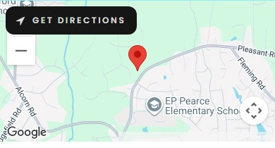

We would love to hear from you
Pastor: Rev Doreen Gibbons
This site is protected by reCAPTCHA and the Google Privacy Policy and Terms of Service apply.
Pleasant Ridge Christian Church
2049 Pleasant Ridge Road, Greensboro, NC, 27410
Hours
Sunday: Worship Service: 9 a.m.
Children's "Sonshine" Ministry: During Service
Fellowship: 10-10:30
Small Groups: 10:30-11:30
Children's Sunday School: 10:30-11:30
Youth Sunday School: 10:30-11:30
